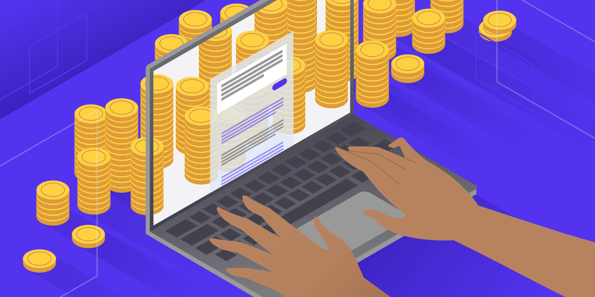

Монетизация творчества
Здесь вы найдете информацию о том, как монетизировать ваше творчество в интернете.
О монетизации

Монетизация - это процесс превращения творческого потенциала, контента или искусства в источник дохода. Это может включать в себя продажу произведений, предоставление услуг, связанных с творчеством, или использование творческого контента для привлечения аудитории и монетизации через рекламу или спонсорство.
Плюсы:
- Самореализация: Монетизация творчества позволяет творческим людям реализовывать свой потенциал и получать удовлетворение от своей работы.
- Устойчивость: Монетизация помогает создать устойчивую модель бизнеса. Путем получения дохода от продажи продуктов, услуг или контента компании могут обеспечить себе стабильное финансовое положение.
- Расширение бизнеса: Доход от монетизации может быть использован для расширения бизнеса, запуска новых продуктов или услуг, привлечения новых клиентов и масштабирования текущих операций.
- Пассивный доход: Некоторые виды творческой деятельности, такие как продажа цифровых товаров или получение дохода от рекламы на популярных платформах, могут привести к созданию источника пассивного дохода.
Минусы:
- Нестабильный доход: В зависимости от специфики творческой работы и ее спроса, доход от монетизации творчества может быть нестабильным и непредсказуемым.
- Конкуренция: В творческих отраслях конкуренция часто высока, что может затруднить монетизацию и потребовать значительных усилий для выделения среди конкурентов.
- Трудности в продвижении: Продвижение творческих работ и услуг может быть сложным из-за необходимости привлечения внимания к уникальным аспектам творчества.
- Творческие ограничения: Некоторые творческие проекты могут столкнуться с ограничениями или вмешательством спонсоров или аудитории, что может ограничить творческую свободу.
Лучшие платформы для монетизации
ВКонтакте

ВКонтакте — это крупнейшая социальная сеть в России, которая предлагает разнообразные инструменты для монетизации творчества, включая публичные страницы, музыкальные подписки и интеграцию с VK Pay.
Плюсы:
- Большая аудитория: доступ к миллионам пользователей.
- Мультиформатность: поддержка видео, музыки, текстов и изображений.
- Интеграция с VK Pay: удобный способ приёма платежей.
Минусы:
- Конкуренция: необходимость выделиться среди множества творцов.
- Алгоритмы показа: сложность в прогнозировании охвата публикаций.
- Регуляции: возможные ограничения на контент.
Яндекс.Дзен

Яндекс.Дзен — это платформа для блогеров и издателей, позволяющая монетизировать контент через встроенную рекламу и партнёрские программы.
Плюсы:
- Персонализация: алгоритмы подбирают аудиторию под ваш контент.
- Инструменты аналитики: понимание поведения аудитории.
- Простота использования: лёгкий старт для новичков.
Минусы:
- Зависимость от алгоритмов: изменения могут снизить доход.
- Ограничения на форматы: не все виды контента поддерживаются.
- Конкуренция с новостными изданиями: борьба за внимание аудитории.
Boosty

Boosty — это платформа для подписок, которая позволяет творцам получать регулярный доход от своих подписчиков за эксклюзивный контент.
Плюсы:
- Регулярный доход: стабильность благодаря подпискам.
- Гибкость: возможность устанавливать разные уровни подписки.
- Прямое общение с аудиторией: создание сообщества вокруг вашего творчества.
Минусы:
- Необходимость в создании эксклюзивного контента: требует времени и ресурсов.
- Построение аудитории: требуется время для привлечения подписчиков.
- Комиссии платформы: часть дохода уходит на обслуживание платформы.
Рекомендации для продвижения в сфере Монетизации
Рекомендации обязательные к использованию:
Создайте ценный контент:
- Качество: Предлагайте качественный, интересный и полезный контент, который решает проблемы аудитории.
- Регулярность: Публикуйте контент регулярно, чтобы удержать аудиторию.
- Разнообразие: Используйте различные форматы контента (статьи, видео, подкасты, инфографика).
Постройте аудиторию:
- Платформы: Выберите подходящие платформы для распространения контента (YouTube, RuTube, VKShorts, Telegram, блог).
- Промоушен: Используйте методы продвижения (SEO, реклама, кросс-промоушен) для привлечения новых подписчиков.
- Взаимодействие: Взаимодействуйте с аудиторией, отвечайте на комментарии и вопросы, проводите конкурсы и опросы.
Выберите подходящие методы монетизации:
- Реклама: Используйте контекстную рекламу, баннерную рекламу, спонсорство.
- Партнерские программы: Получайте комиссию за продажу товаров или услуг через партнерские ссылки.
- Продажа товаров/услуг: Предлагайте свои собственные товары или услуги, связанные с темой контента.
Отслеживайте результаты:
- Аналитика: Используйте инструменты аналитики для отслеживания показателей (просмотры, клики, подписки, продажи).
- Тестирование: Проводите тесты разных методов монетизации, чтобы найти наиболее эффективные.
Дополнительные рекомендации:
- Премиум-контент: Предложите эксклюзивный контент (видео, статьи, курсы) за платную подписку.
- Платные онлайн-курсы: Создайте и продавайте онлайн-курсы по тематике вашего контента.
- Вебинары и мастер-классы: Проводите платные вебинары и мастер-классы с живым взаимодействием.
- Электронные книги: Напишите и опубликуйте электронные книги, связанные с темой вашего контента.
- Сотрудничество с брендами: Сотрудничайте с брендами для размещения рекламных интеграций или создания спонсорского контента.